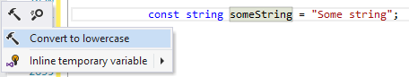

Create a Context Action
What you should know beforehand:
Examples (?):
The purpose of context actions is to quickly introduce a minor change to the code, like changing access modifiers, convert foreach to for, and so on. When a context action is available for the current caret position, ReSharper displays the “hummer” action indicator. The list of possible context actions is displayed after a user presses Alt+Enter.

For example, let’s create a very simple context action that will be applicable to variable declarations. If a variable name contains any character in uppercase, the context action will suggest to convert the name to lowercase (of course, from the point of functionality, such action is absolutely useless).
[ContextAction(Name = "ToLowerCase", Description = "Convert the text to lowercase", Group = "C#", Disabled = false,
Priority = 1)]
public class ToLowerCaseContextAction : ContextActionBase
{
private readonly IVariableDeclaration _nodeUnderCaret;
public ToLowerCaseContextAction(LanguageIndependentContextActionDataProvider dataProvider)
{
_nodeUnderCaret = dataProvider.GetSelectedElement<IVariableDeclaration>();
}
protected override Action<ITextControl> ExecutePsiTransaction(ISolution solution, IProgressIndicator progress)
{
return textControl =>
{
var newText = _nodeUnderCaret.DeclaredName.ToLower();
RenameRefactoringService.Rename(solution,
new RenameDataProvider((IDeclaredElement) _nodeUnderCaret, newText), textControl);
};
}
public override string Text => "Convert to lowercase";
public override bool IsAvailable(IUserDataHolder cache)
{
var nodeText = _nodeUnderCaret?.DeclaredName;
var containsUpperCase = nodeText != null && nodeText.Any(char.IsUpper);
return containsUpperCase;
}
}
Notes
- The easiest way to create a context action is to inherit from the
ContextActionBaseclass. - The context action class must be marked with the
ContextActionattribute:Groupdefines the scope of the action (C# files in our case).Disabledspecifies whether the action is disabled by default.Prioritysets the position of the action in the actions list.
- The context data provider
LanguageIndependentContextActionDataProviderobtained in the constructor provides a super-helpful methodGetSelectedElementthat returns the tree node under the caret. The provider has also methods that allow you to get current offset, selection range and so on. - The
Textproperty defines the text that will be shown in the actions list. IsAvailableis used to check whether the action is available for the current caret position. Iffalse, the action is not shown in the list of possible context actions.ExecutePsiTransactionreturns the action that is executed when the context action is selected.- Note that we use
RenameRefactoringServiceto change variable’s name. The service performs seamless renaming of a variable everywhere in the code.
Last modified: 12 July 2017